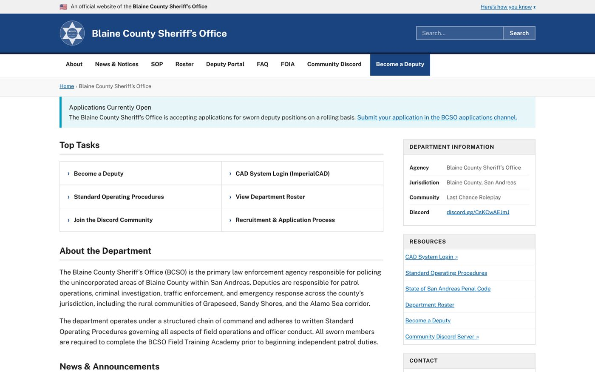

Game projects
Blaine County Sheriff's Office
The department website for the Last Chance Roleplay community.

About
A public website and staff portal for an in-game sheriff's department, styled after a real government site.
What it does
- Public site. News, the roster, standard operating procedures, FAQ, and records requests.
- Recruiting. Application information and the path to joining.
- Training. Training modules behind a staff login, and a field training officer section.
- Staff tools. Leave requests, a deputy portal, and an admin panel.